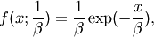
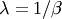
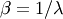

numpy.random.exponential¶
- numpy.random.exponential(scale=1.0, size=None)¶
Exponential distribution.
Its probability density function is

for x > 0 and 0 elsewhere. is the scale parameter, which is the inverse of the rate parameter . The rate parameter is an alternative, widely used parameterization of the exponential distribution [R70].
The exponential distribution is a continuous analogue of the geometric distribution. It describes many common situations, such as the size of raindrops measured over many rainstorms [R68], or the time between page requests to Wikipedia [R69].
Parameters : scale : float
The scale parameter, .
size : tuple of ints
Number of samples to draw. The output is shaped according to size.
References
[R68] (1, 2) Peyton Z. Peebles Jr., “Probability, Random Variables and Random Signal Principles”, 4th ed, 2001, p. 57. [R69] (1, 2) “Poisson Process”, Wikipedia, http://en.wikipedia.org/wiki/Poisson_process [R70] (1, 2) “Exponential Distribution, Wikipedia, http://en.wikipedia.org/wiki/Exponential_distribution